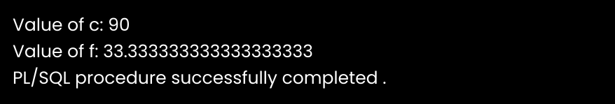

Variables in PL/SQL
A variable is a meaningful name which facilitates a programmer to store data temporarily during the execution of code. It helps you to manipulate data in PL/SQL programs. It is nothing except a name given to a storage area. Each variable in the PL/SQL has a specific data type which defines the size and layout of the variable's memory.
A variable should not exceed 30 characters. Its letter optionally followed by more letters, dollar signs, numerals, underscore etc.
How to declare variable in PL/SQL
You must declare the PL/SQL variable in the declaration section or in a package as a global variable. After the declaration, PL/SQL allocates memory for the variable's value and the storage location is identified by the variable name.
Syntax for declaring variable:
Following is the syntax for declaring variable:
variable_name [CONSTANT] datatype [NOT NULL] [:= | DEFAULT initial_value]
Here, variable_name is a valid identifier in PL/SQL and datatype must be valid PL/SQL data type. A data type with size, scale or precision limit is called a constrained declaration. The constrained declaration needs less memory than unconstrained declaration.
Naming rules for PL/SQL variables
-
The variable in PL/SQL must follow some naming rules like other programming languages.
-
The variable_name should not exceed 30 characters.
-
Variable name should not be the same as the table table's column of that block.
-
The name of the variable must begin with ASCII letter. The PL/SQL is not case sensitive so it could be either lowercase or uppercase. For example: v_data and V_DATA refer to the same variables.
-
You should make your variable easy to read and understand, after the first character, it may be any number, underscore (_) or dollar sign ($).
NOT NULL is an optional specification on the variable.
Initializing Variables in PL/SQL
Evertime you declare a variable, PL/SQL defines a default value NULL to it.
If you want to initialize a variable with other value than NULL value, you can do so during the declaration, by using any one of the following methods.
-
The DEFAULT keyword
-
The assignment operator
Let's take a simple example to explain it well:
DECLARE
a integer := 30;
b integer := 40;
c integer;
f real;
BEGIN
c := a + b;
dbms_output.put_line('Value of c: ' || c);
f := 100.0/3.0;
dbms_output.put_line('Value of f: ' || f);
END;
After the execution, this will produce the following result:
Now that you know variables in PL/SQL, let's explore the constants in PL/SQL
Share this page on :